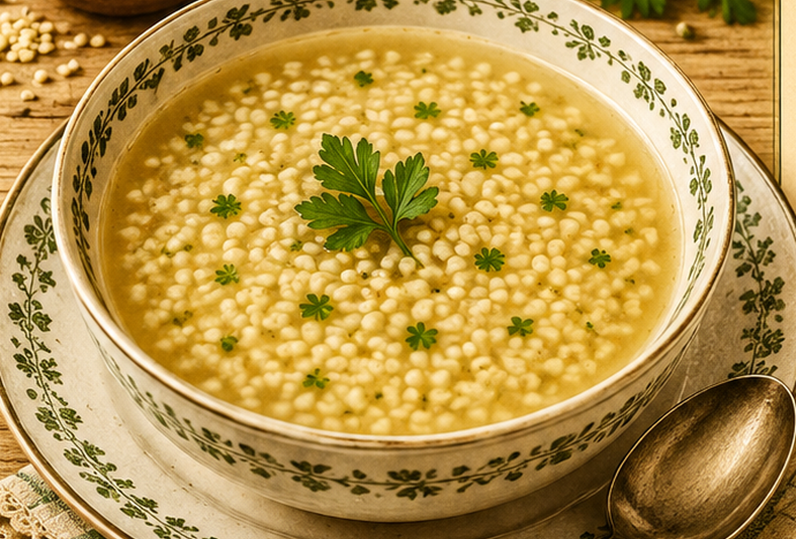

Einlaufsuppe
Eine Fleischbrühe mit feinem Einlauf aus Mehl, Ei und Wasser.

Originale Überlieferung
„Einlaufsuppe. Dieselbe wird aus Fleischbrühe hergestellt. Von dem Einlauf zu machen nimmt man 80 g Mehl, 1 Ei und rührt es mit Wasser zu einem dünnen Brei. Kocht die Brühe, so wird der Teig durch den Trichter laufen gelassen und gerührt. Dann kommt noch Salz und Muskat hinzu.“
Moderne Übertragung
Aus Mehl, Ei und Wasser wird ein dünnflüssiger Teig angerührt. Er läuft unter stetigem Rühren in die siedende Fleischbrühe und bildet feine Fäden und kleine Nocken.
Zutaten
- 1 l kräftige Fleischbrühe
- 80 g Mehl
- 1 Ei
- etwas Wasser
- Salz
- Muskat
Zubereitung
- Die Fleischbrühe zum Sieden bringen.
- Mehl, Ei und so viel Wasser verrühren, dass ein dünnflüssiger Teig entsteht.
- Den Teig durch einen Trichter oder in dünnem Strahl in die Brühe laufen lassen und dabei rühren.
- Kurz gar ziehen lassen und mit Salz und Muskat abschmecken.